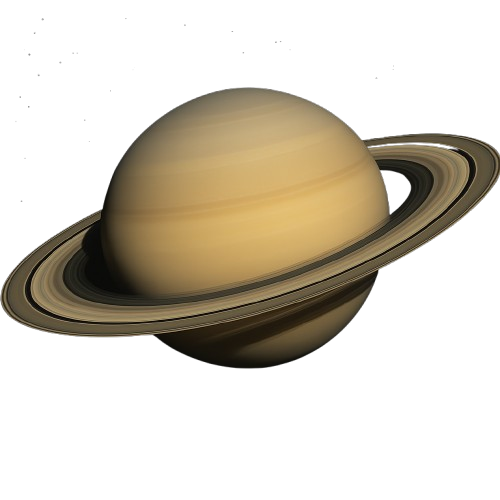

"Exploring The Solar Wonders"



The Sun is the blazing heart of our solar system, pouring golden fire across the skies. Every planet dances around it, drawn to its warmth like moths to an eternal flame.
Mercury is the speedster of the solar system, zipping around the Sun like a cosmic messenger. Symbol Meaning: A circle (spirit) with a cross (matter) below and a crescent (mind) above. Represents: Communication, intellect, and travel.
Venus wraps herself in clouds of mystery and fire, hiding a fierce, volcanic heart beneath her beauty. Symbol Meaning: A circle above a cross, symbolizing spirit over matter. Represents: Love, beauty, femininity, harmony.
Earth is the blue gem of the cosmos, teeming with life and endless wonders. Symbol Meaning: A circle divided by a cross, representing the four cardinal directions or elements. Represents: Life, nature, balance, and wholeness.
Mars, the red warrior, guards ancient secrets beneath rusted sands and frozen peaks. Symbol Meaning: A circle with an arrow pointing outward, like a shield and spear. Represents: Action, energy, masculinity, war.
Jupiter is the mighty king of planets, crowned with storms and cloaked in swirling clouds. Symbol Meaning: A stylized “4” or a crescent over a cross. Represents: Expansion, luck, knowledge, and growth.
Saturn wears rings of frozen poetry, spinning tales of beauty in icy loops. Symbol Meaning: A cross over a sickle or scythe. Represents: Time, discipline, structure, karma.
Uranus rolls through space on its side, the sleepy dreamer of the planetary family. Symbol Meaning: A circle with a dot in the center, flanked by two lines (like an H for Herschel, who discovered it). Represents: Innovation, change, rebellion, sudden insight.
Neptune sings deep sea songs in the far reaches of the solar system. Symbol Meaning: A trident (three-pronged spear). Represents: Dreams, illusion, spirituality, the sea.